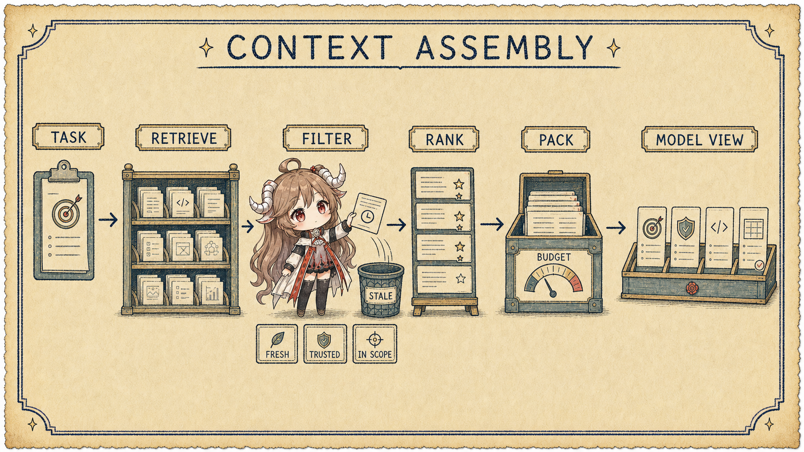
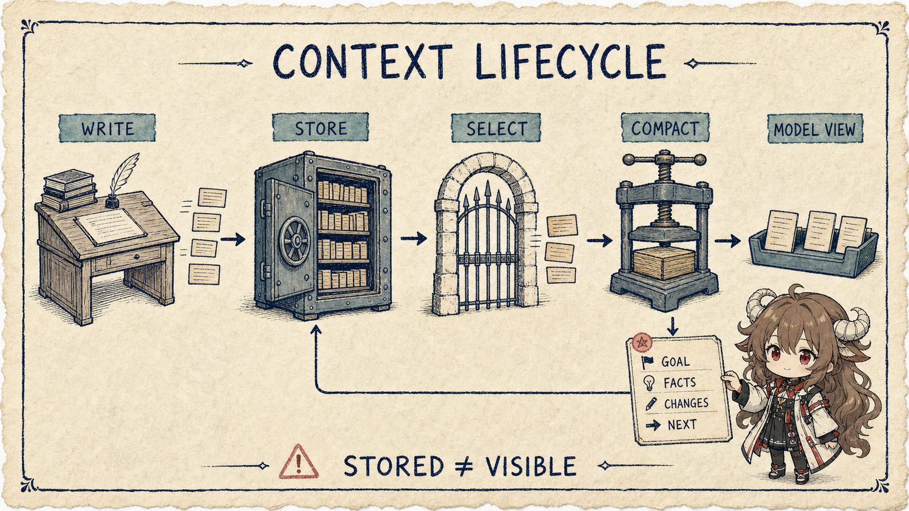

一个长任务里，信息会不断增长：原始目标、对话、读过的文件、搜索结果、工具输出、失败原因、计划、补丁、测试日志。把它们全部保留下来有利于恢复，却不代表每轮都应该全部发送给模型。窗口是有限预算；注意力和相关性同样是预算。
阅读契约
- 这篇回答：Context 从哪里来，怎样选择、排序、压缩并验证新鲜度。
- 这篇不回答：把 memory、RAG、聊天历史当作同义词，也不假定“窗口越大越好”。
- 读完检查：你能画出 stored state → selected evidence → model view 的投影，并为每类材料指定生命周期。
证据边界
本文以 Anthropic 官方 context engineering 文章、contextual retrieval 说明，以及 OpenAI 官方 conversation state / prompt 指南为公开依据。具体模型的 context window、缓存和截断规则会变化，设计时必须回到目标模型的当前文档。
一、Context 不是仓库，而是投影
先区分三个集合：durable store 保存可能以后有用的事实；candidate set 是检索、最近消息和运行时状态提供的候选；model view 才是本次请求真正序列化给模型的内容。保存成功只证明第一层存在，不能证明第三层可见。
| 材料 | 适合长期保存？ | 适合每轮携带？ | 主要风险 |
|---|---|---|---|
| 稳定系统规则 | 是 | 通常是 | 多份副本漂移 |
| 用户目标与 done 条件 | 是 | 通常是 | 压缩时丢失约束 |
| 完整工具日志 | 是，便于审计 | 否，只带相关片段 | 噪声挤占证据 |
| 当前文件内容 | 可由仓库保存 | 按任务选择 | 快照过期 |
| 阶段性计划 | 可 checkpoint | 当前阶段需要 | 旧计划阻碍新证据 |
| 秘密与敏感数据 | 按政策最小化 | 默认否 | 泄漏和权限扩大 |
二、每次 inference 前都要走装配管线
Anthropic 把 context engineering 概括为在 agent 每一步维护最佳 token 集合。这里的“最佳”不是相似度最高，而是能支持当前决策：相关、足够新、来源可信、与目标一致，并且值得占用预算。

2.1 先问“下一步要做什么”
同一个任务在调查、编辑、验证三个阶段需要不同工作集。调查时需要入口文件与错误日志；编辑时需要目标符号、调用方和约束；验证时需要 diff、测试命令和失败输出。用整个任务的宽泛 query 检索，往往会得到“总体相关、当前无用”的材料。
2.2 再按来源和新鲜度过滤
相似度不能判断权威。正式 schema 比旧讨论更可靠，刚执行的测试比三轮前的猜测更新，工作区文件比模型记忆更接近当前事实。每个 context item 最好携带来源、时间/版本、作用域和敏感级别，装配器才能做确定性过滤。
{
"item": "payment.go: validateRefund(...) signature",
"source": "workspace_file",
"version": "git:7ad12f + dirty",
"observed_at": "turn:18",
"scope": ["refund-fix"],
"trust": "local-authoritative",
"ttl": "until-file-change"
}三、预算不是统一截断，而是分区分配
简单地“超过 N tokens 就砍前面”会随机伤害关键约束。更稳的策略是先预留输出和工具 schema，再给稳定契约、当前目标、近期 observation、检索证据和历史摘要划预算。预算可以动态变化，但优先级必须显式。
| 分区 | 预算原则 | 压力下的处理 |
|---|---|---|
| 行为契约 | 小而稳定，优先保留 | 去重，不随意总结 |
| 目标与完成标准 | 每轮可见 | 结构化压缩并校验字段 |
| 当前 observation | 离决策越近越优先 | 保留错误码、关键行和来源 |
| 历史过程 | 只保留仍影响决策的状态 | 总结、tombstone 或移出 model view |
| 候选文档 | 按任务阶段打包 | 降级、分批读取或再检索 |
| 输出空间 | 调用前预留 | 不能等输入塞满后再希望模型完成 |
四、压缩要保留不变量，不是追求短
长任务早晚需要 compact。高质量压缩应保留目标、约束、已确认事实、已做变更、未解决问题、下一步和证据指针；可丢弃重复解释、完整低价值日志和已经被新事实推翻的猜测。摘要本身是有损变换，所以必须可追溯到原始记录。

4.1 用 checkpoint schema 保护关键状态
- Goal：当前任务与完成条件。
- Constraints：不能丢的产品、安全和用户边界。
- Confirmed：带来源的已验证事实。
- Changed：文件、外部对象和副作用记录。
- Open：未解决问题、失败尝试及原因。
- Next：下一动作以及为什么。
自由文本摘要适合人读，结构化 checkpoint 适合恢复与校验。二者可以同时存在：结构保证不变量，叙述解释因果。
五、Memory 与 retrieval 是 context 的上游
Memory 是持久化机制，retrieval 是找候选的机制，context 是本次调用的可见集合。一个事实写进 memory 后，仍需要检索、过滤和预算才能进入 context；一个工具结果即使不写 memory，也可能在当前回合直接进入 context。
Anthropic 的 contextual retrieval 展示了一个关键点：孤立 chunk 可能丢失文档语境，为 chunk 补充来源上下文能改善检索。工程上还要继续往后走：检索命中只是候选，运行时仍需检查版本、权限、重复和与当前阶段的关系。
六、用 context trace 调试，而不是只看最终答案
当 agent 用错事实，必须能回答：候选里有没有正确事实？它在哪一步被过滤？错误事实为什么排得更高？最终请求带了哪一版？压缩是否改写了含义？因此每次调用最好记录一份不含敏感正文的 context manifest。
- item id、来源、版本与选择原因；
- 进入/淘汰的阶段与分数，不只保留最终列表；
- 每个分区的 token 用量和截断事件；
- 摘要或压缩产物指向的原始证据；
- 敏感材料的脱敏、授权与保留策略。
七、复盘：用五个问题做 Context 评审
| 评审问题 | 要防的失败 | 首选机制 |
|---|---|---|
| 模型此刻必须知道什么？ | 缺关键证据 | 按当前决策定义 working set |
| 每条事实从哪里来、还新鲜吗？ | 过期与错误权威 | provenance、版本、TTL |
| 为什么它值得占窗口？ | 噪声和 lost-in-the-middle | 分区预算、排序、去重 |
| 压力下哪些不变量不能丢？ | compact 后目标漂移 | 结构化 checkpoint |
| 下一次运行怎样重新取得它？ | 把 session 当 memory | durable store + 可重放选择策略 |
Context engineering 的结果不是“塞得更多”，而是模型在每个决策点拿到正确的工作集。下一篇转向模型看不见却决定动作能否发生的部分：runtime harness。